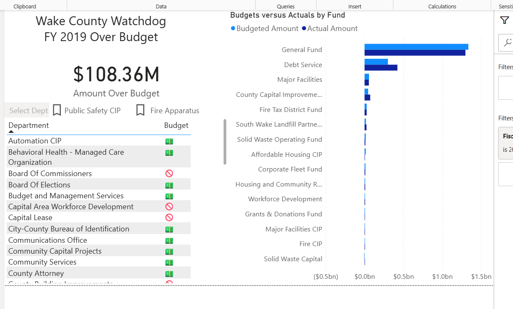
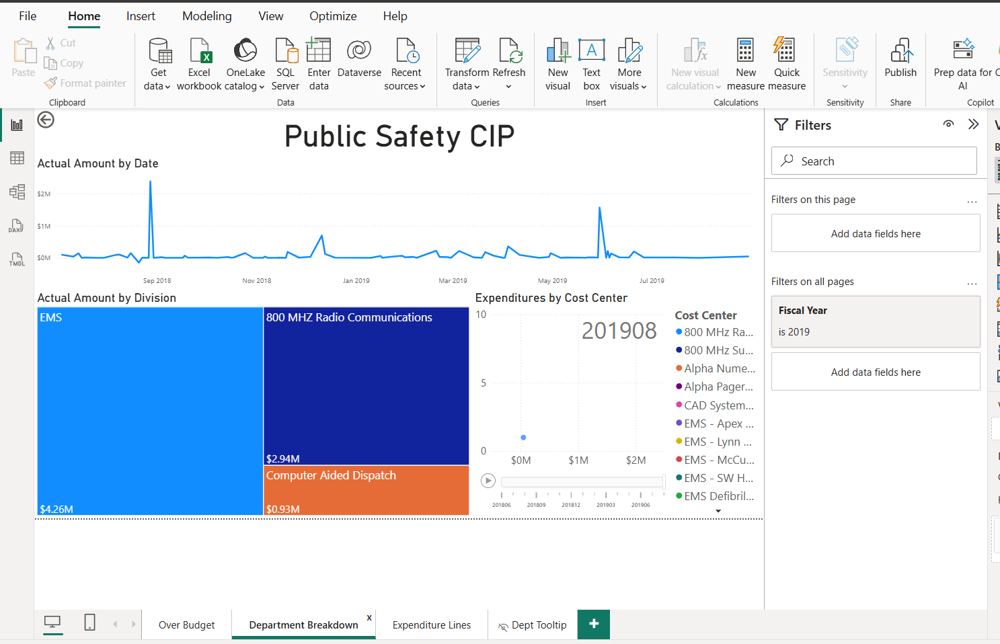
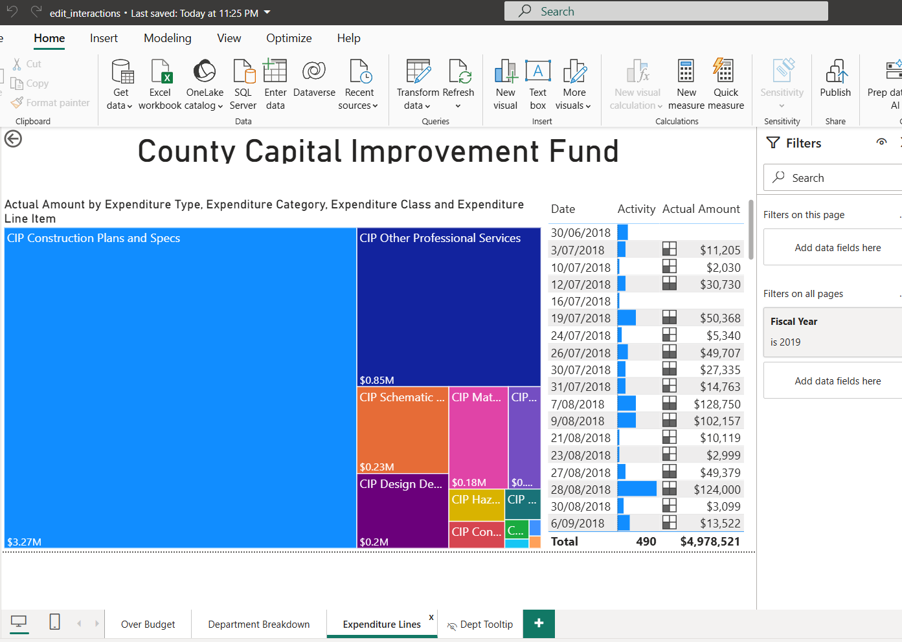
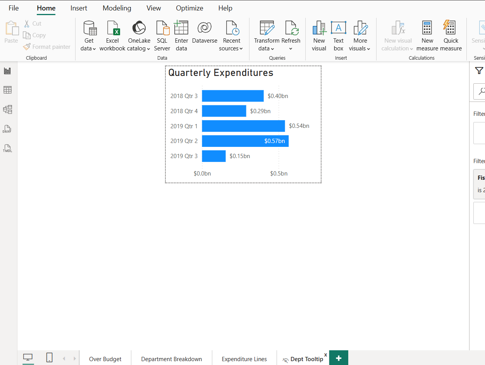

Financial Insights Case Study: Edit Interactions (Power BI)
Goal: Demonstrate how Power BI’s Edit Interactions feature can control cross-filtering behavior across visuals,
using FY2019 budget vs actuals and expenditure line data.
What this report shows
Over-budget headline for FY2019
Budget vs Actual by fund type (side-by-side comparison)
Department & fund drill-down for targeted investigation
Line item breakdown (what exactly is driving the spend)
Quarterly trend to spot spikes and seasonality
Dashboard Screens
These screenshots are included for quick review on GitHub Pages.
1) Over Budget (FY2019)

2) Expenditure Lines – Drill-down view

3) Quarterly Expenditures

4) (Optional) Additional Page / Interaction Example

Insights from the dashboards
Headline finding (FY2019)
The report highlights a clear overspend: $108.36M Amount Over Budget for FY2019.
Budget vs Actual by Fund (where the gap is coming from)
General Fund is the largest overall spend category and dominates both budget and actual amounts.
Debt Service is the next major fund, indicating a significant portion of spending is tied to financing obligations.
Several smaller funds show minimal differences, making it easier to focus attention on the top drivers first.
Targeted drill-down (example: County Capital Improvement Fund)
Within the County Capital Improvement Fund page, the largest line item shown is
“CIP Construction Plans and Specs” at around $3.27M.
The next major block is “CIP Other Professional Services” at about $0.85M, followed by a long tail of smaller items.
The line-item table indicates a total of about 490 activities adding up to roughly $4,978,521 for the selected context.
Quarterly pattern (spend timing)
Quarterly spend peaks at 2019 Q2 (~$0.57bn), which s